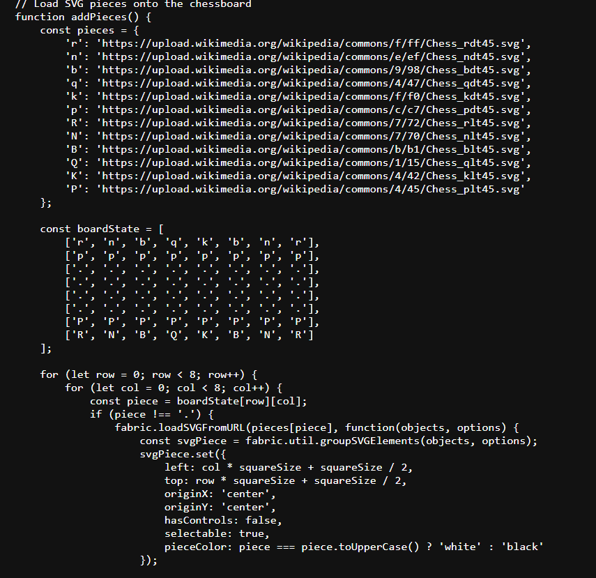
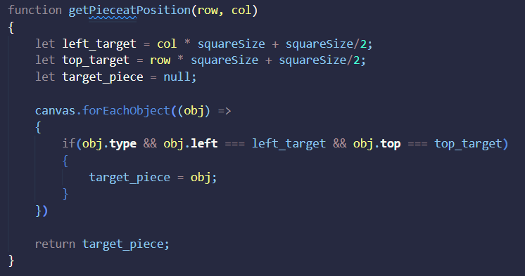

Firstly, the html is set up to initialize the hud for the timers and the move history in div elements and initialize the canvas. The link to the cdn for fabric is also here as well as the css styles of the elements.
Then the javascript, the first part initializes all the variables to be used globally within the code, such as the array to update history. The two timer functions respectively start the timer over for each player and is meant to initialize it. The update timer function then takes the html timer element of the respective turn and tics it down every second. If the timer reaches zero the player gets alerted that time is up.
Then a chessboard is created with 7 rows and 7 columns, every other square is denoted as a lightsquare and each sqaure is created using the fabric.Rect and giving the proper properties, then it is added to the canvas
Then the adding of the pieces. Each piece is assigned an SVG image and an initial boardstate is created. Then again cycling through the rows and columns, each piece is added with . denoting free spaces. If not dots, the pieces are assigned thier SVGs and given position properties and setting thier color based on if they are upper or lower case.
Then still inside the add pieces function are the drag and drop handlers, these set the active object to be whatever is held down in the mouse if picked up on the correct turn and when the mouse is unclicked the piece is released (and the user is prompted to enter a destination position though it doesnt seem to work)
Then the function cords to position converts coordinates to chess notation. After the update history function which takes a string and pushes it into the history array and html element. Then the movePiece function, this function sets the new piece location upon movement, it first converts the from and to position parameters into chess notation for use in the history function, then, the cordinates are set using setCords and canvas.renderall and the turn is switched then the timer for the other player is started
Finally, there is a keydown function that is designed to read user input of a move and move the piece based on it and then every initial function is called to create the board, add pieces, and start the first timer.
Personally, I used the step 7 code at first and added step 9 essentials such as the timers and history onto it. For my first enhancement after that I wanted to fix the bug that I saw with moving the pieces on the wrong turn causing them to disappear, so I gave the pieces an original left and top attribute to set them back to incase of an invalid move
Then I wanted a winner to be declared after time was up as when move time is up in normal chess normally the player loses except in some cases. So I added a declare winner function to be used universally that declares a winner and ends the game
Then I wanted to keep the pieces in bounds, So I added boundary variables and newLeft/Top variables to calculate if the piece is inbounds before setting cords. If it isnt, they go back to thier original positions, if they are, the cords are set and the original positions are updated.
Then I made a function to convert pieces to convert a piece to words usable by the history function, I gave each piece this attribute to be called by object if needed.
Then I began work on my validation, adding basic movement properties to each piece (taking major inspiration from my react chess game) and passing the validation function cords of the beginning and end positions as well as the piece being moved. I called this within the object modified function which deals with the object being modified or the piece being moved. I also calculated the coordinates in here using the square size and rounding down. This same expression is what makes the pieces snap to squares. I also added a piece type to store what piece is being moved to be used by the object
Then I realized I needed a function to get pieces outside of the one being modified for use particularly in checking blocked paths and preventing self capture. So I created a function looping through each object on the canvas looking for the target coordinates of a desired piece, if found, the target piece is set to the object, if no piece at position found, target piece is null
Using this function, I then made a check for own capture, and a function to check the paths of moving pieces. I used a boolean variable so I can simply return true or false and calculated the row direction and column direction using the sign from the difference of the destination and current position (taking inspiration from my react code). For the rook like movement, I checked if the destination row or column was the same as the starting row and looped through each position inbetween them to check if the path is blocked keeping track using 2 variables starting at the original position and incrementing by the 1 or -1 based on direction of movement until the destination. Bishop like movement was similar in the loop besides replacing an or with an and. However, this time the first check is to see if the absolute value of the differences of column and row are the same for diagonal movement. The notBlocked variable is false if a piece is blocking movement and true otherwise.
Then I looked into checking when the king is captured and updating history to reflect piece captures. I did these checks all in the object modified handler using my getpiece function to retrieve the piece at the destination. If there isnt a piece, the function goes on as normal, If there is a piece, the function checks if its the king (of course after checking valid move), if the piece is the king, the function checks which color king it was and accordingly updates the history with king capture and calls the declare winner function. if the piece isnt a king, the piece is captured and the history reflects which piece took what and where.
I finally fixed my pawn movement with capture and first turn move properties.

Then as a final touch up I wanted to think back to the first assignment and add a move sound effect, so I loaded an audio upon webpage loading, and played it in every instance of a successful player move.
Finally, I added start and restart buttons/functions that respectively start and restart the game when clicked. Start game uses a toggleable variable and then calls all the functions to create the chess assets. Restart reinitializes every game aspect so the game can start anew
This is a basic implementation of chess using Fabricjs, each player has a 5 minute timer to make all their moves in the game and the start button displays the board and the restart button resets the board and history. No special rules are in place and the pieces move based on normal chess validation rules and alerts the player to invalid moves and resets the piece. Each move will be displayed in history on the bottom of the board and so will each capture including king capture. There is a drag and drop control scheme to the game and the turn will change as well as the timer swapping every turn. If the king is captured or a player's timer runs out, a winner is declared and the pieces become unmodifiable until the game is restarted.
This I felt was much harder to code then the react chess game. Not being able to directly use html within the javascript and the absence of hooks was noticeable. However, I found myself taking major parts of my React code and using them in my Fabric code with a different implementation which helped the time taken to code this immensely. My pieces disappearing out of bounds was a huge problem in particular for me that took a long time to solve. Overall, I feel I am learning web development and basic game development slowly more and more as well as now having a good understanding of Javascript/HTML/CSS by this point with at least what ive had to use.